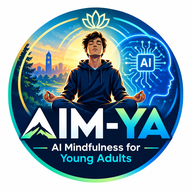

AIM-YA is a four-week program that pairs mindfulness practice with reflective, ethical engagement with AI. Welcome aboard. This page has everything you need to get your cohort started.
Today's students are learning, working and relating alongside AI every day. AIM-YA helps them build the attention, self-awareness and discernment to use these tools wisely — without losing touch with themselves or each other. Students practice mindfulness, reflect on how AI shapes their thinking, and work through the ethics of AI in small, guided groups.
Undergraduates and young adults navigating AI in their studies, careers and daily lives — from first-year students to STEM majors.
Four weeks of guided sessions, led by trained facilitators or student group leaders, supported by a companion app. Fits inside an existing course or first-year experience.
Steadier attention, awareness of stress, healthier habits with AI tools, and a clearer sense of their own values when AI is in the room.
Developed and piloted at the University of Central Florida, with outcomes tracked using validated measures (MAAS, PSS-10, AIMS) under IRB approval.
Everyone leading AIM-YA sessions should watch all four, in order, before the program begins. Each is under 3½ minutes and captioned. No prior meditation experience required.
A short, two-page form that sets out what each partner commits to and how student data is protected. Download it, fill it in, sign, and email it back.
AIM-YA · AI Mindfulness for Young Adults · University of Central Florida